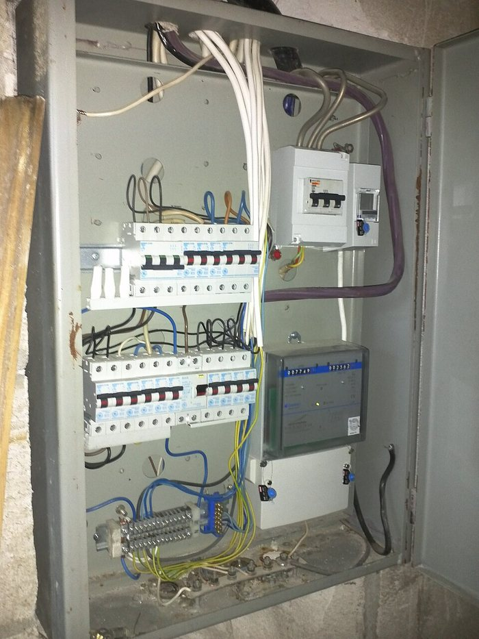
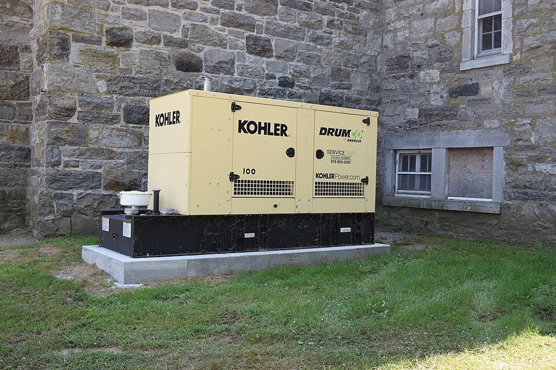
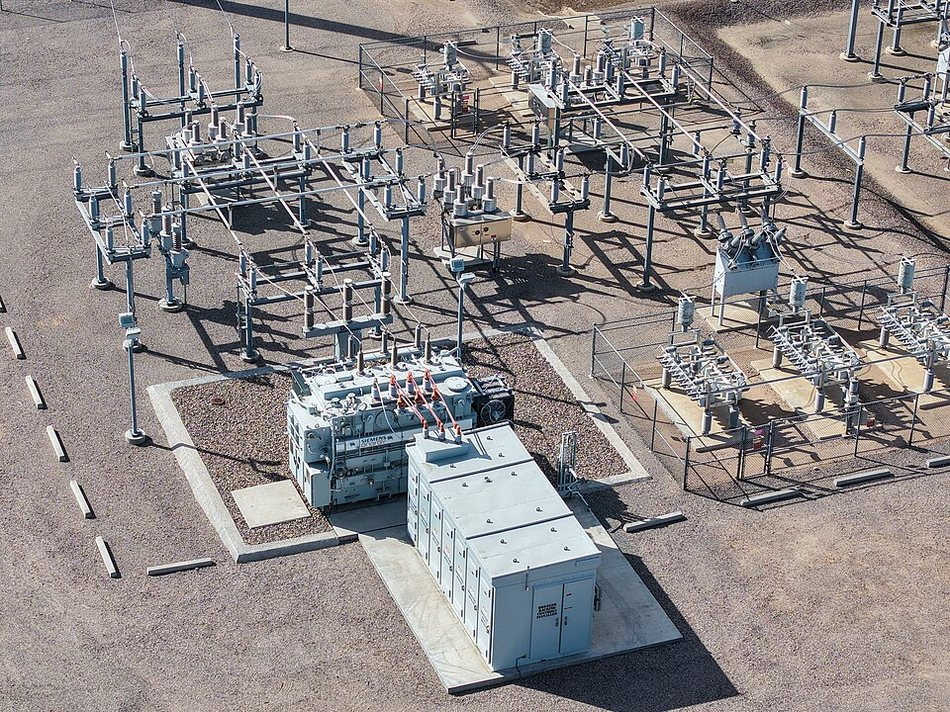

⚡ Sistema eléctrico del sitio: cuadro de fuerza, generadores y subestación
Esta zona responde una pregunta que aparece en cada visita: ¿cómo se mantiene eléctricamente el lugar? Aquí está la cadena completa — desde la acometida en media tensión hasta el último equipo — con lo que el técnico necesita para entender, inspeccionar y reportar sin improvisar. Complementa la Guía de Infraestructura Crítica y Energía (conceptos básicos y sistema -48 V).
1. La cadena de energía del sitio: de dónde viene y quién la respalda
La energía eléctrica no "aparece" en el equipo: recorre una cadena fija. Ubique mentalmente sus eslabones en cada sitio que visite — si sabe cuál es cuál, sabrá qué preguntar, qué medir y qué reportar cuando algo falle.

- Red comercial: llega en media tensión (MT, 13,8 kV típico). Es la fuente normal y no tiene respaldo propio.
- Subestación del sitio: seccionador, interruptor con protecciones y transformador que baja la tensión a 480/208 V (sección 4).
- Cuadro de fuerza: el tablero principal que reparte y protege cada circuito del sitio (sección 2).
- TTA/ATS: la transferencia que decide si las cargas se alimentan de la red o del generador (sección 3).
- Respaldos: generador diésel para la CA y rectificador con baterías para los equipos de telecom en -48 V CC.
| Eslabón | Qué respalda | ¿Cuánto tiempo? |
|---|---|---|
| UPS / capacitores | Equipos críticos, por segundos | Segundos: puente entre la falla y la planta |
| Baterías -48 V | Equipos de telecomunicaciones | Horas, según banco y carga |
| Generador diésel | Todo el sitio (CA) | Días, mientras haya combustible y mantenimiento |
| Red comercial | — | Sin respaldo: cuando cae, entra la cadena de abajo |
2. El cuadro de fuerza (tablero principal de distribución)
El cuadro de fuerza es el gabinete donde llega la energía ya transformada (480/208 V) y desde donde se reparte a cada circuito del sitio: rectificadores, climatización, luces, tomas de fuerza y equipos auxiliares. Es el punto donde "todo se ve y todo se puede cortar" — por eso es también el más vigilado.


Partes que debe reconocer
- Interruptor general: la entrada del tablero; corta o conecta todo. Es el punto de bloqueo principal (LOTO).
- Barras (buses): reciben la energía y la distribuyen a los interruptores derivados.
- Interruptores derivados (breakers): uno por circuito, dimensionados a la carga y al cable. Protegen contra sobrecarga y cortocircuito.
- Medidor e indicadores: voltaje por fase, corriente y kWh; de aquí se toman las lecturas de la ronda.
- Puesta a tierra: barra del gabinete conectada a la malla del sitio. Nunca se retira ni se desvía.
- Rotulado: cada breaker y cada cable identificados (L1·L2·L3·N·T). Sin rótulos no se interviene.
Cómo se inspecciona (sin abrir)
- Termografía: apunte la cámara a breakers y barras desde fuera; una diferencia notable de temperatura entre fases delata apriete flojo o contacto desgastado.
- Lecturas: voltaje entre fases y fase-neutro, corriente por fase (pinza). Registre y compare con la línea base: el desbalance entre fases calienta equipos y dispara alarmas.
- Ruido y olor: zumbido fuerte, chisporroteo u olor a quemado se reportan de inmediato, sin abrir.
3. El generador (grupo electrógeno) y la transferencia TTA/ATS
El grupo electrógeno (planta eléctrica) es el respaldo de CA: motor diésel + alternador + controlador, montados sobre una base. Su misión: cuando la red falla, arrancar solo, estabilizarse y asumir la carga; y cuando la red vuelve, devolverla y apagarse ordenadamente. Los tiempos siguientes son típicos — valide el comportamiento real contra el manual del controlador y el procedimiento del sitio.


Partes principales
- Motor diésel: el que gira; consume combustible y se refrigera con radiador.
- Alternador: convierte el giro en corriente alterna (60 Hz); regula voltaje y frecuencia.
- Controlador: el cerebro del arranque automático; monitorea voltaje, frecuencia y fallas, y recibe la señal del TTA.
- Batería de arranque (12/24 V): da el arranque. Sin batería sana no hay planta, aunque todo lo demás esté bien.
- Tanque y línea de combustible: con válvula de corte; revise niveles y fugas.
- Radiador, escape y ventilación: expulsan el calor; nunca obstruya rejillas ni salidas.
Secuencia de transferencia (lo que debe observar)
- Cae la red → el TTA lo detecta (segundos).
- Señal de arranque al generador → arranca (típico 5–8 s).
- Estabiliza voltaje y frecuencia (3–5 s): no se conmuta antes.
- Conmuta la carga a la planta: el sitio queda en generador.
- Al volver la red: espera de estabilización, re-transferencia a la red y parada del generador con enfriamiento — nunca se detiene en caliente.
Ronda del técnico y prueba periódica
| Actividad | Frecuencia típica | Qué se revisa |
|---|---|---|
| Inspección visual | Semanal | Niveles (aceite, refrigerante, combustible), fugas, mangueras, batería y bornes, precalentador |
| Prueba en vacío | Semanal | Arranque y parada automáticos; registre el horómetro |
| Prueba con carga | Mensual | 30 min alimentando carga real; observe V, Hz, temperatura y humo |
| Mantenimiento mayor | Según horas (fabricante) | Aceite y filtros, refrigerante, limpieza de radiador, prueba de baterías |
Fallas típicas y primer diagnóstico
| Síntoma | Causas probables (de más a menos común) |
|---|---|
| No arranca | Batería descargada o bornes flojos · falta de combustible o válvula cerrada · controlador en falla o en manual |
| Arranca y se apaga | Presión de aceite baja · temperatura alta (radiador obstruido) · paro de emergencia activado |
| Voltaje o frecuencia fuera | Regulación desajustada · carga mal balanceada · falla de combustión |
| Humo anormal | Filtro de aire sucio · inyectores · sobrecarga |
4. La subestación: cómo se tiene una subestación en el sitio
Cuando el sitio recibe media tensión (13,8 kV típico), necesita su propia subestación: el conjunto de seccionador, interruptor con protecciones, transformador y cuadro de baja tensión que convierte la MT en 480/208 V para todo el sitio. Puede ser un patio (intemperie) o una sala (interior) — en ambos casos, zona restringida.


Qué hace cada equipo
- Seccionador (cuchillas): aísla visiblemente una sección para mantenimiento. Jamás se abre bajo carga — no tiene capacidad de corte.
- Interruptor con relés: corta la falla automáticamente; los relés de protección ordenan el disparo (sobrecorriente, falla a tierra).
- Pararrayos (SPD): desvía a tierra las sobretensiones atmosféricas y los impulsos de maniobra.
- Transformador: baja la tensión (13,8 kV → 480/208 V). Vigile temperatura, nivel de aceite (si es en aceite) y ruido anormal.
- Cuadro de baja tensión: recibe la salida del transformador y la entrega al cuadro de fuerza del sitio.
- Puesta a tierra: malla propia de la subestación; es la base de todas las protecciones.
Qué puede (y qué no) hacer el técnico
- Sí: inspección visual y termográfica desde fuera, lectura de instrumentos y relés, reporte de ruidos, olores, fugas y temperaturas anormales.
- No: maniobras en MT (seccionadores, interruptores), abrir celdas energizadas, ingresar a zonas restringidas sin autorización — todo eso exige procedimiento, permiso y personal calificado.
5. Cómo se mantiene eléctricamente el sitio (rutina de sostenimiento)
Mantener eléctricamente el lugar es una rutina, no una reparación: inspeccionar, medir, registrar y comparar. Cada dato anotado (hora, instrumento y punto de medición) forma la línea base que permite detectar el cambio antes de la falla.
| Actividad | Frecuencia típica | Detalle |
|---|---|---|
| Ronda visual del sistema eléctrico | Diaria / semanal | Cuadro (sin abrir), planta, rectificador, baterías y alarmas del sitio |
| Prueba del generador en vacío | Semanal | Arranque automático y horómetro |
| Prueba del generador con carga + termografía de tableros | Mensual | 30 min en carga; imágenes térmicas de breakers y barras |
| Reapriete de conexiones y prueba de aislamiento | Semestral (con LOTO) | Torque según fabricante; megóhmetro en circuitos seleccionados |
| Análisis de aceite del transformador y prueba del banco DC | Anual | Laboratorio; descarga controlada de baterías según diseño |
| Limpieza de tableros y gabinetes | Semestral (con permiso) | Suciedad + humedad = fallas de aislamiento |
Alarmas típicas y primera lectura
| Alarma | Qué significa |
|---|---|
| Falla de red comercial | Se perdió la fuente normal: verifique que la planta arrancó y asumió la carga |
| Voltaje bajo de batería | El banco DC se está agotando: revise rectificadores y carga conectada |
| Falla de rectificador | Módulo caído: verifique si los demás (N+1) sostienen la carga y el banco |
| Alta temperatura en sala | Climatización o ventilación comprometida; afecta baterías y equipos |
| La planta no arranca | Batería, combustible o controlador (ver sección 3) |
6. Checklist rápido de inspección eléctrica
- ¿Cuadro de fuerza sin señales de calor, olor ni ruido anormal? (termografía si hay cámara)
- ¿Breakers rotulados, sin disparos? ¿Reservas identificadas?
- ¿Planta: niveles, batería, fugas, precalentador y horómetro?
- ¿Prueba de arranque del generador al día? ¿Última prueba con carga registrada?
- ¿Rectificadores: módulos activos, sin alarmas, voltaje de flotación correcto?
- ¿Baterías DC: voltaje y temperatura por bloque; bornes sin sulfato?
- ¿Subestación: instrumentos normales, sin ruidos, olores ni fugas? ¿Zona restringida respetada?
- ¿Lecturas del día registradas con hora, instrumento y punto de medición?
- ¿Alarmas del sitio revisadas e interpretadas?
- ¿Algo fuera de la línea base? → reportar con evidencia fotográfica; no improvisar.
7. Preguntas de repaso
- Dibuje la cadena de energía del sitio y marque en qué punto respalda cada elemento.
- ¿Por qué el seccionador no debe abrirse bajo carga, y el interruptor sí puede?
- ¿Qué revisa primero si el generador no arranca? Ordene tres causas probables.
- ¿Qué diferencia hay entre probar la planta en vacío y con carga? ¿Por qué importa?
- ¿Qué mide la termografía en un cuadro de fuerza y qué delata un punto caliente?
- ¿Cuáles son las cinco reglas de oro y en qué orden se aplican?
- ¿Qué puede hacer el técnico frente a la subestación y qué requiere autorización?
- ¿Por qué se registran las lecturas con hora e instrumento? ¿Para qué sirve la línea base?
8. Enlaces para seguir aprendiendo
- Learn the Main Elements of an Electrical Substation — recorrido por los equipos de una subestación (inglés).
- Playlist ATS/TTA (transferencia automática) — funcionamiento y controladores reales.
- NFPA 70E 2021 (PDF) — seguridad eléctrica en el lugar de trabajo.
- OSHA — Electrical safety — referencias de seguridad (inglés).
9. Créditos de las figuras
| Figura | Autor | Licencia |
|---|---|---|
| flujo_sitio.svg · cuadro_fuerza.svg · grupo_electrogeno.svg · subestacion.svg | Elaboración propia PIMVCA | Uso interno educativo |
| generador_diesel.jpg | Cantons-de-l'Est — Wikimedia Commons | CC0 |
| cuadro_abierto.jpg | Dmitry G — Wikimedia Commons | CC BY-SA 3.0 |
| subestacion_patio.jpg | Rsparks3 — Wikimedia Commons | CC0 |